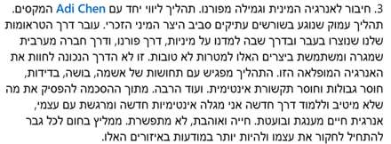
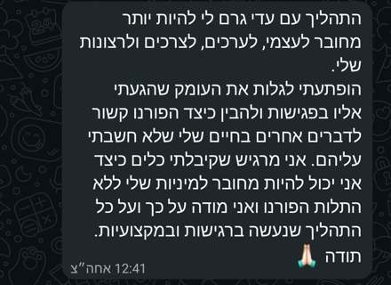
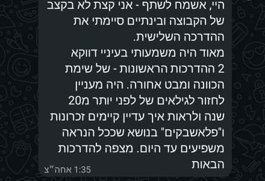
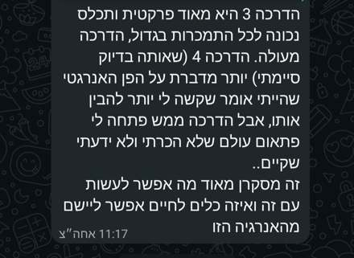
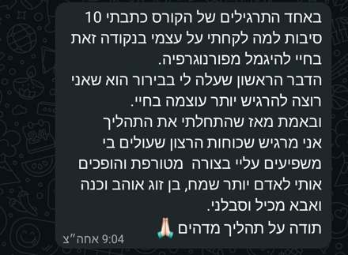
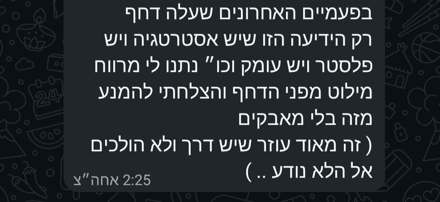
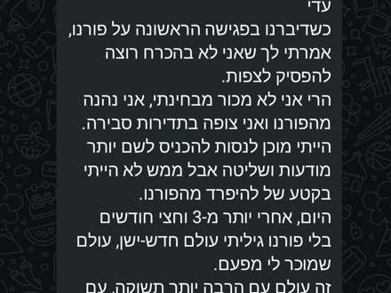
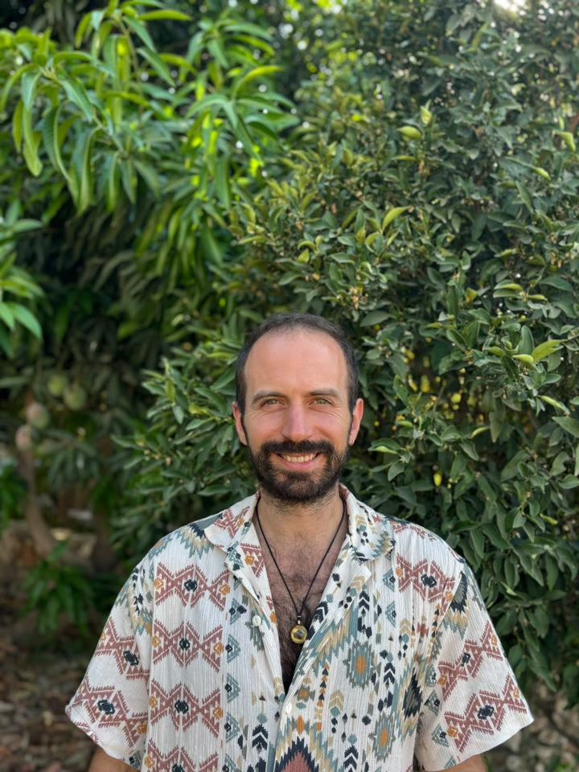

REturn · עשרת ימי תשובה מינית
מסע של 10 ימים לחיבור מחדש עם האנרגיה המינית ולשחרור דפוסים פורנוגרפיים.
ואם בסוף התהליך לא קיבלת ערך, הכסף חוזר אליך. בלי אותיות קטנות.
אין כאן בושה ואין כאן שיפוט. אתה לא מקולקל, ואתה לא צריך להגיע לתחתית כדי להחליט לבחור אחרת.
לפעמים הפורנו הוא לא הבעיה עצמה. הוא הדרך שבה אנחנו מתמודדים עם בדידות, לחץ, שעמום או צורך שלא קיבל מענה.
כשנלחמים בעצמנו, הדפוס רק מתחזק. כשמתחילים להבין מה מסתתר מתחתיו, נפתחת אפשרות אחרת: לעצור לרגע, ליצור מרווח בין הדחף למעשה, ולבחור.
REturn הוא שיבה אל עצמך, וגם קריצה ל-Turn On: להידלק מחדש.
השם נשען גם על עשרת ימי תשובה: הזדמנות לעצור, להתבונן, לשוב ולבחור מחדש.
בשורש ההרגל הזה יש אנרגיה עצומה שמבקשת ביטוי. כשמנתבים אותה נכון, היא יכולה להפוך ממקור של מאבק ופיצול לכוח של חיים, יצירה וחיבור. זה לא מסע של מלחמה בפורנו ולא של התנזרות מתוך פחד. זה מסע של הכרה, בחירה וגילוי של הכוח שכבר קיים בך.
סרטון הסבר מפורט על מהות המסע וכל הפרטים.
להבין לעומק את דפוסי הפורנוגרפיה ואת הקשר שלך לאנרגיה המינית.
ליצור מרווח בין הדחף למעשה, ולבחור אחרת ברגע האמת.
לזהות את הרגעים שבהם אתה פועל באוטומט, ומה מסתתר מאחוריהם.
להיות פחות תלוי בגירוי חיצוני ולהכיר מחדש את האנרגיה שלך.
אני זמין לאורך כל עשרת הימים.
בסיום המסע, פגישה איתי להטמעה ולצעדים הבאים.
כ-30 דקות ביום. התכנים נשארים פתוחים גם אחרי עשרת הימים. עשרת הימים הם תחילתו של תהליך, לא הבטחה שכל הדפוסים ייעלמו תוך עשרה ימים.
מה מפעיל אותו, מה הוא מבקש, ומה קורה לך רגע לפני שאתה נכנס ללופ.
לפגוש את הדחף אחרת, ליצור מרווח לפני הפעולה ולבחור איך לפעול.
להפוך את האנרגיה המינית ממקור של מאבק לכוח של חיים, יצירה וחיבור.







הודעות אמיתיות שקיבלתי, כמו שהגיעו.
״אני חושב שהדרך שעדי מציע היא הדרך הנכונה להתמודד מול הפורנו. התוכנית לא מנסה לדכא ולהחזיק אותנו במלחמה מתמדת, אלא לגלות את הכוחות החיוביים שבנו. במקום מלחמה, חיזוק של הכוחות הקיימים. במקום אשמה, גילוי וחמלה. עם הכלים והרבה סבלנות אני רואה שיפור, והכי חשוב, חיזוק של הרצון שלי.״
״אחרי יותר מ-20 שנה של שימוש בפורנו ואינספור ניסיונות להפסיק, החלטתי לנסות שוב, הפעם בעזרת עדי. התרגילים מעשיים ונגישים, ובעיקר אני מרגיש שיש איתי עוד מישהו על זה. חוויית הלבד תמיד הקשתה עליי, וכעת אני לא מרגיש לבד בכלל. האווירה הלא שיפוטית עוזרת לי גם בהצלחות וגם בקושי ובנפילות.״
״בפעמיים האחרונות שעלה דחף, הידיעה שיש אסטרטגיה ויש עומק נתנה לי מרווח, והצלחתי להימנע בלי מאבקים. זה מאוד עוזר שיש דרך ולא הולכים אל הלא נודע.״
״באחד התרגילים כתבתי 10 סיבות למה לקחתי על עצמי להיגמל מפורנוגרפיה. הדבר הראשון שעלה הוא שאני רוצה להרגיש יותר עוצמה בחיים. מאז שהתחלתי אני מרגיש שכוחות הרצון שעולים בי הופכים אותי לאדם יותר שמח, בן זוג אוהב וכנה ואבא מכיל וסבלני.״
״שתי ההדרכות הראשונות היו משמעותיות מאוד בעיניי. היה מעניין לחזור לגילאים של לפני יותר מ-20 שנה ולראות איך זיכרונות ו’פלאשבקים’ בנושא עדיין משפיעים עד היום. מצפה להדרכות הבאות.״
״הדרכה 3 מאוד פרקטית ונכונה לכל התמכרות בגדול. הדרכה 4 פתחה לי פתאום עולם שלא הכרתי ולא ידעתי שקיים. זה מסקרן מאוד, מה אפשר לעשות עם זה ואילו כלים לחיים אפשר ליישם מהאנרגיה הזו.״
״התהליך עם עדי גרם לי להיות יותר מחובר לעצמי, לערכים, לצרכים ולרצונות שלי. הופתעתי לגלות את העומק שהגעתי אליו בפגישות ולהבין איך הפורנו קשור לדברים אחרים בחיים שלי. קיבלתי כלים להיות מחובר למיניות שלי בלי התלות בפורנו.״
״בפגישה הראשונה אמרתי שאני לא בהכרח רוצה להפסיק לצפות. הייתי מוכן להכניס מודעות ושליטה, אבל לא להיפרד מהפורנו. היום, אחרי יותר משלושה וחצי חודשים בלי פורנו, גיליתי עולם עם הרבה יותר תשוקה ויותר ביטחון מול נשים. אני נמשך הרבה יותר לבנות אמיתיות, להבדיל מהבנות שבמסך.״
״תהליך עמוק שנוגע בשורשים עתיקים סביב היצר המיני. אני מגלה אינטימיות חדשה. ממליץ בחום לכל גבר להתחיל לחקור את עצמו ולהיות יותר במודעות באיזורים האלו.״
השמות שונו לשמירה על הפרטיות. אלה חוויות אישיות, והתוצאות שונות מאדם לאדם. איננו מבטיחים תוצאה זהה לכולם.

אני עדי חן, נשוי לספיר ואבא לגאיה.
גבר שחוקר לעומק את עצמו ואת המיניות שלו, ועבר על בשרו את הדרך להשתחרר מהדפוסים הפורנוגרפיים. היום כבר 7 שנים ללא פורנו כלל.
אני מלווה גברים לשחרור מהצורך בפורנו, ליצירת חיבור אינטימי, נוכחות עמוקה וחיים מתוך תשוקה. העבודה שלי נשענת על שנים במכון לטיפול בהתמכרויות, שם פגשתי וליוויתי קרוב ל-2,000 מטופלים עם התמכרויות שונות, ועל שנים של הנחיית נערים וגברים בתחום המיניות.
אני לא מגיע מעמדה של שיפוט או מאבק במיניות. אני רואה באנרגיה המינית כוח חיים שיכול להיות מקור לחיבור, ליצירה, לחיוניות ולעוצמה.
לא חייבים להגדיר את עצמך כמכור כדי להצטרף.
בקליניקה הפרטית שלי תהליך כזה עולה אלפי שקלים. רציתי שמי שצריך את זה יוכל להגיע, כי אני יודע כמה גברים מתמודדים היום עם האתגר הזה. לכן לקחתי את מה שלמדתי ובניתי מסע מדויק ומעשי, במחיר שלא יעמוד בדרכך. המחיר נמוך כדי שתוכל להתחיל, לא כי התוכן קל משקל.
הערכים משוערים ומובאים להמחשה.
מחיר סמלי: 10 כפול 18, חי. התשלום מסמל בחירה והתחייבות. אם המחיר מאתגר אותך, דבר איתי ונמצא פתרון.
תודה! הפרטים התקבלו. השלב האחרון: תשלום.
לתשלוםאם בסוף התהליך תרגיש שלא קיבלת ערך, הכסף חוזר אליך.
בלי תנאים נסתרים ובלי אותיות קטנות. אני יודע כמה הצעד הראשון יכול להיות מפחיד, ולכן אני לא רוצה ששום דבר חיצוני יעמוד בינינו.
לא. אפשר להצטרף גם בלי להגדיר את עצמך ככה. מספיק שתרגיש שהפורנו תופס מקום שאתה כבר לא רוצה לתת לו.
המסע לא נבנה סביב מלחמה או התנזרות מתוך פחד, אלא סביב יצירת מרווח בין הדחף למעשה ובחירה מודעת. מה תבחר, זו החלטה שלך.
כחצי שעה.
כן. אני זמין בוואטסאפ לאורך כל המסע, ובסיומו יש פגישה אישית איתי.
כן, גם אחרי עשרת הימים, כדי שתוכל לחזור ולהעמיק.
התכנים נשארים פתוחים, ואפשר לחזור אליהם. זה תהליך, לא מבחן.
אם בסוף התהליך תרגיש שלא קיבלת ערך, הכסף חוזר אליך. בלי תנאים נסתרים ובלי אותיות קטנות.
כן, וכנראה במיוחד. המסע נועד למי שגילה שכוח רצון לבדו לא מספיק, ורוצה להבין מה עומד מאחורי הדפוס.